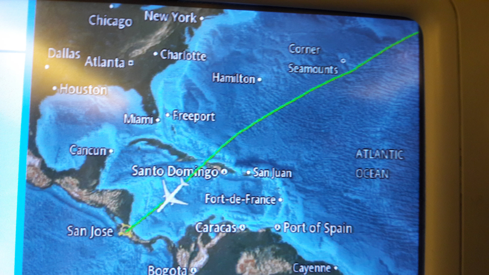
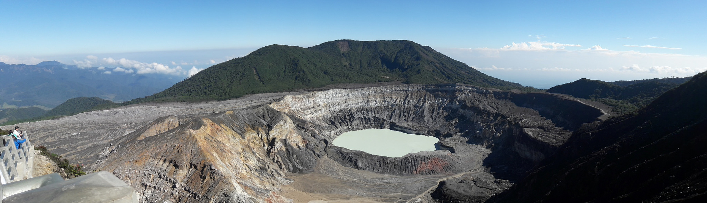
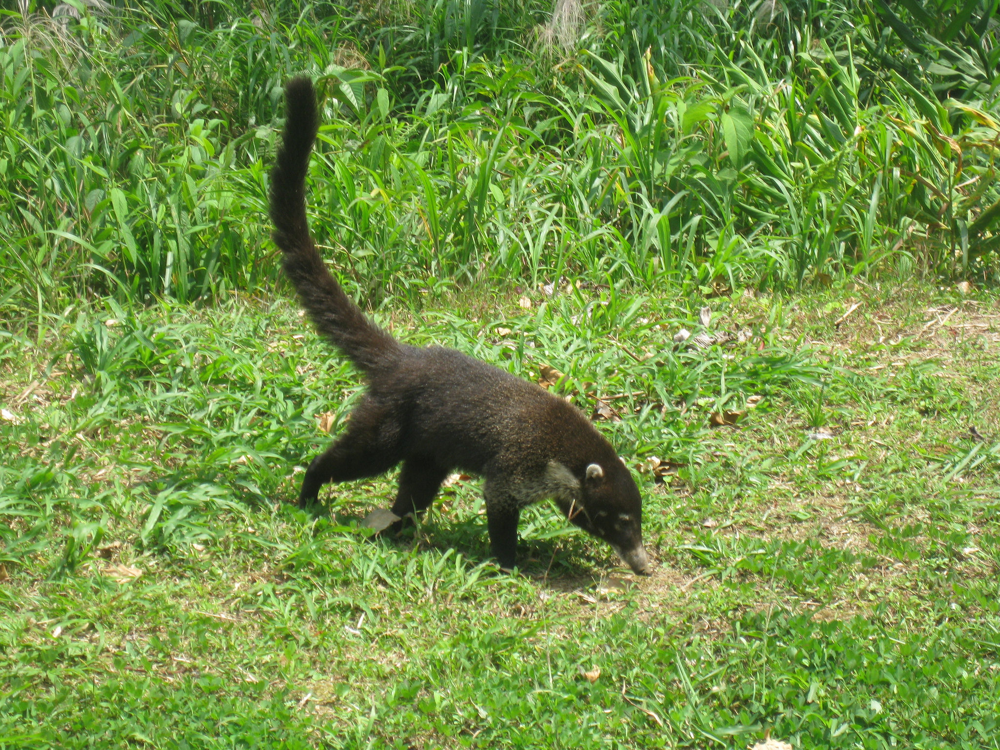
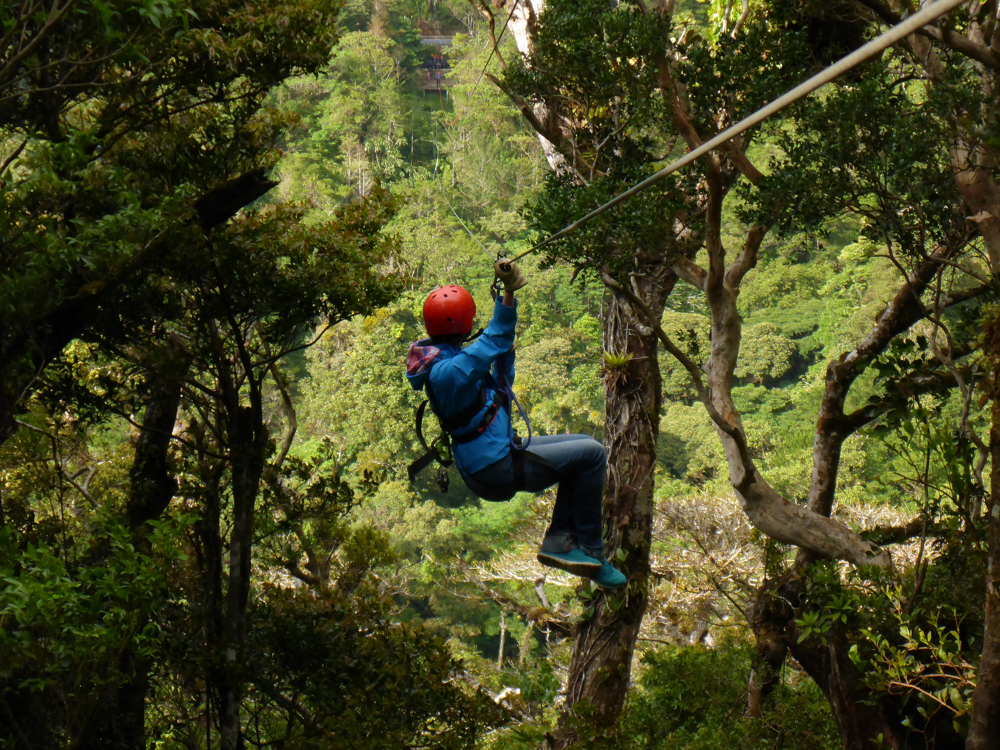
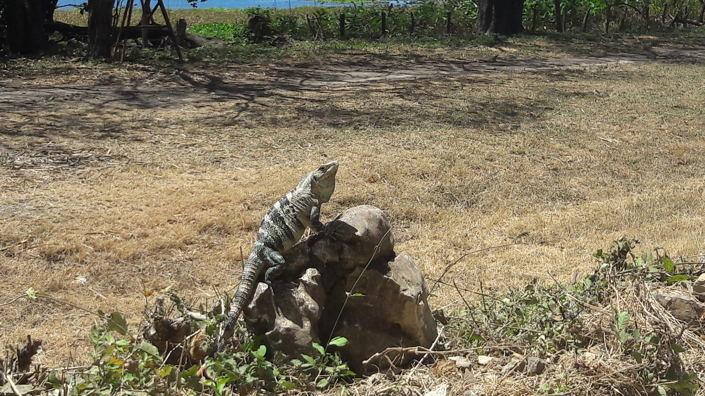
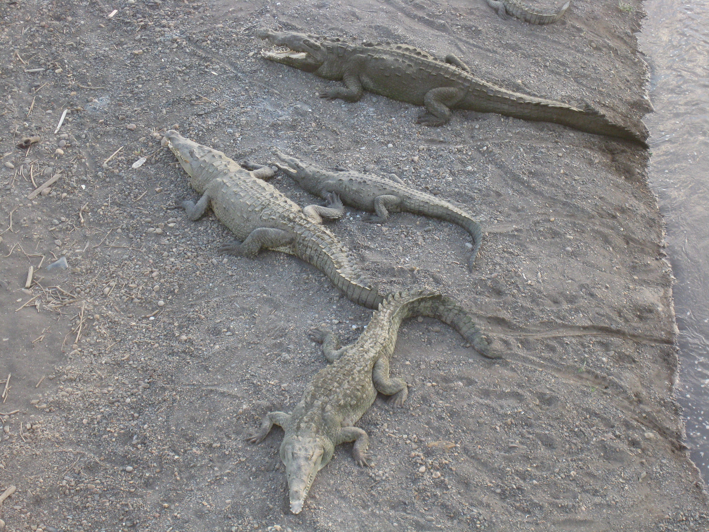
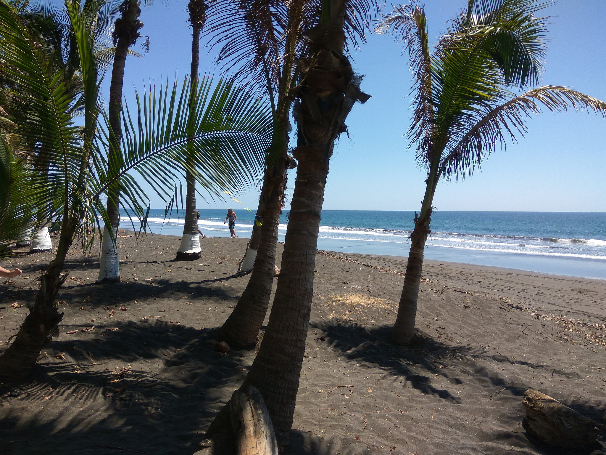
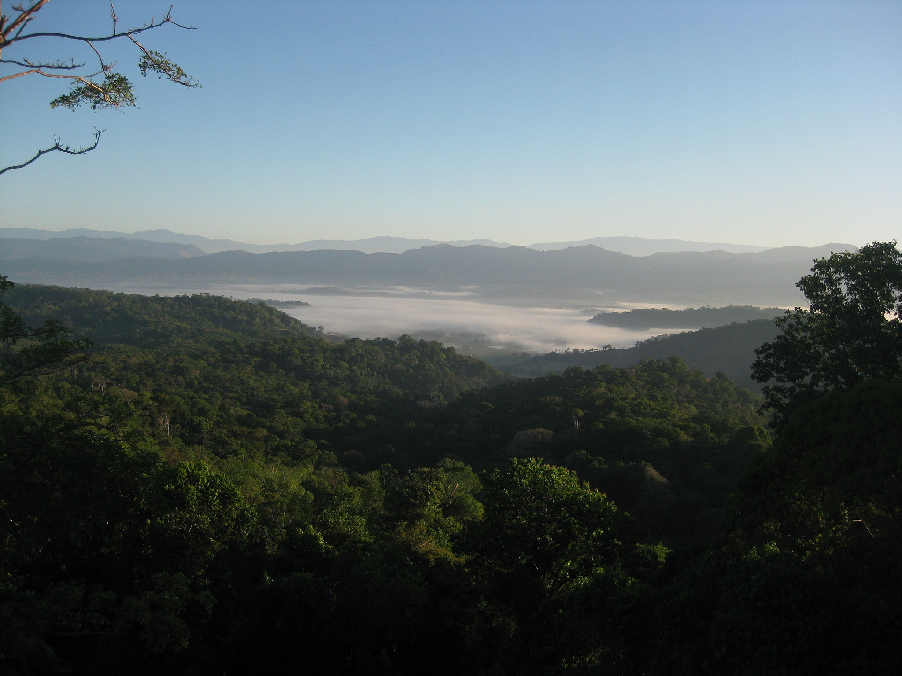
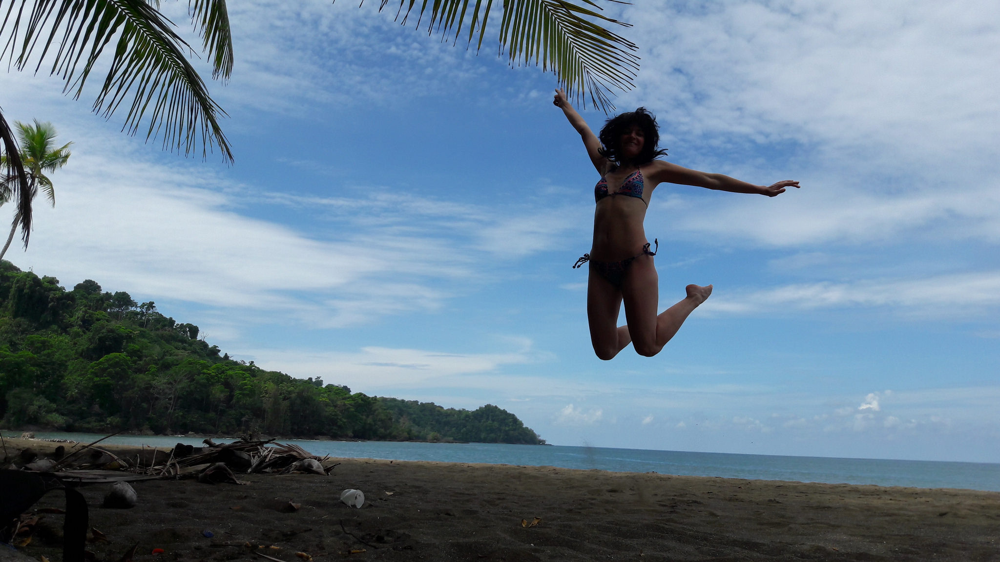
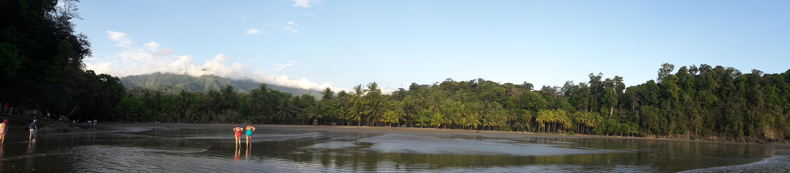

Путешествие по Коста-Рике
Карта приключений
1

Посмотреть все фото из аэропорта
Вернуться к карте
2

Посмотреть все фото с вулкана Поас
Вернуться к карте
3

Посмотреть все фото с носухой
Вернуться к карте
4
Посмотреть все фото с вулкана Ареналь, с термальных источников и с незабываемого купания в горной реке городка Ла-Фортуна
Вернуться к карте
5
Посмотреть все фото с пейзажами озера Ареналь
Вернуться к карте
6

Посмотреть все фото из Монтеверде
Вернуться к карте
7
Посмотреть все фото с водопада Catarata Llanos de Cortes около города Bagaces
Вернуться к карте
8

Посмотреть все фото из национального парка Palo Verde
Вернуться к карте
9

Посмотреть фото с крокодилами у реки Тарколес
Вернуться к карте
10

Посмотреть фото с пляжа Эрмоса
Вернуться к карте
11

Посмотреть фото из гостиницы El Mirador
Вернуться к карте
12

Посмотреть фото из национального парка Корковадо
Вернуться к карте
13

Посмотреть фото из Увиты
Вернуться к карте